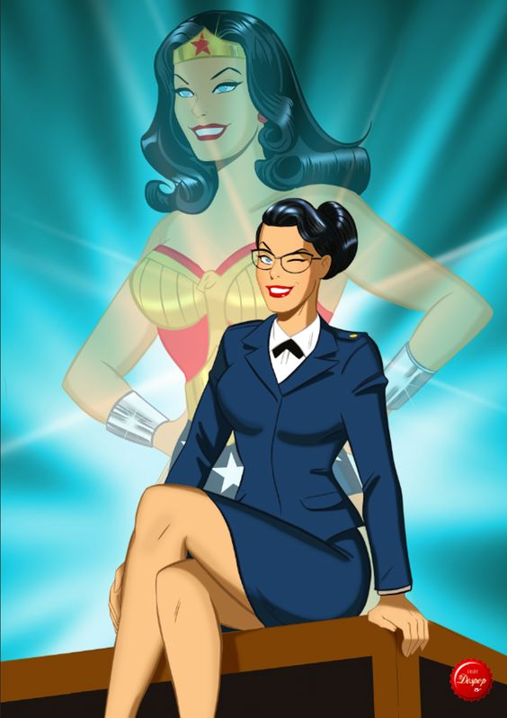
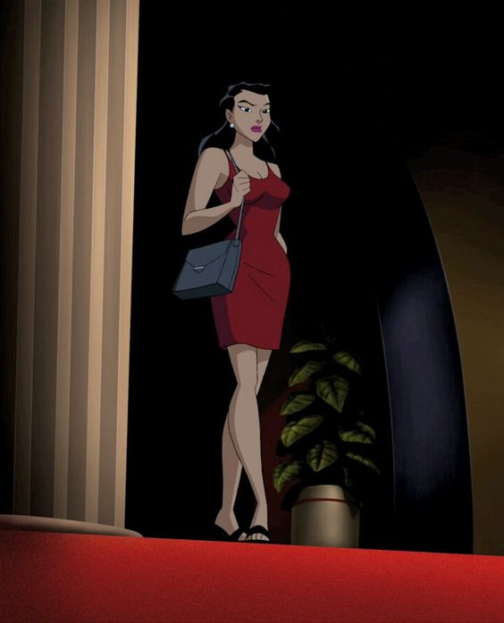

Galería


Formación

Formada en:
Estudie de historia, arte, filosofía, matematicas y otras ramas del conocimiento a cargo de institutrices en Themyscera. También aprendí de ellas combate cuerpo a cuerpo, equitación, manejo de armas, habilidades de atletismo y natación.
Participe de la Segunda Guerra mundial y aprendí primerox auxilios ayudando en un hospital tras ella. Leugo de esto, dedique mi vida a estudiar Arqueología en la Universidad de Londres, así como Derecho y relaciones Públicas en la Universidad de Harvard.
Experiencia Laboral

Actividades laborales realizadas:
Habilidades
Habilidades y competencias: